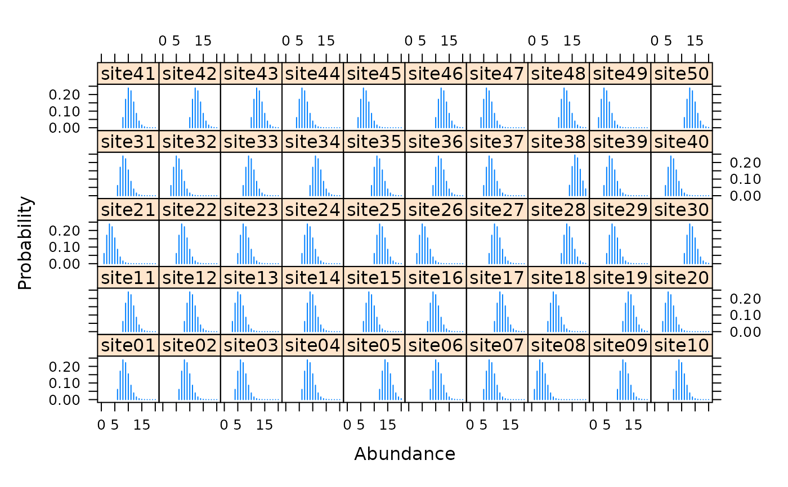
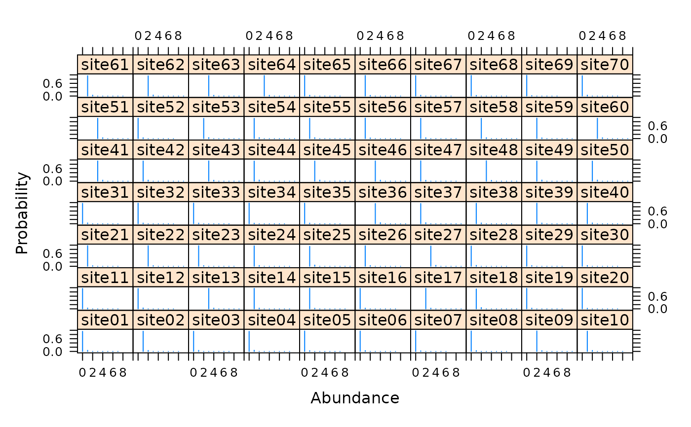

multinomPois.RdFit the multinomial-Poisson mixture model to data collected using survey methods such as removal sampling or double observer sampling.
multinomPois(formula, data, starts, method = "BFGS", se = TRUE, engine=c("C","R","TMB"), ...)
| formula | double right-hand side formula for detection and abundance covariates, in that order. |
|---|---|
| data | unmarkedFrame supplying data. |
| starts | vector of starting values. |
| method | Optimization method used by |
| se | logical specifying whether or not to compute standard errors. |
| engine | Either "C" to use fast C++ code or "R" to use native R code during the optimization. |
| ... | Additional arguments to optim, such as lower and upper bounds |
This function takes advantage of the closed form of the integrated likelihood when a latent Poisson distribution is assumed for abundance at each site and a multinomial distribution is taken for the observation state. Many common sampling methods can be framed in this context. For example, double-observer point counts and removal sampling can be analyzed with this function by specifying the proper multinomial cell probablilities. This is done with by supplying the appropriate function (piFun) argument. removalPiFun and doublePiFun are supplied as example cell probability functions.
unmarkedFit object describing the model fit.
Ian Fiske
Royle, J. A. (2004). Generalized estimators of avian abundance from count survey data. Animal Biodiversity and Conservation, 27(1), 375-386.
Royle, J. A., & Dorazio, R. M. (2006). Hierarchical Models of Animal Abundance and Occurrence. Journal Of Agricultural Biological And Environmental Statistics, 11(3), 249.
# Simulate independent double observer data nSites <- 50 lambda <- 10 p1 <- 0.5 p2 <- 0.3 cp <- c(p1*(1-p2), p2*(1-p1), p1*p2) set.seed(9023) N <- rpois(nSites, lambda) y <- matrix(NA, nSites, 3) for(i in 1:nSites) { y[i,] <- rmultinom(1, N[i], c(cp, 1-sum(cp)))[1:3] } # Fit model observer <- matrix(c('A','B'), nSites, 2, byrow=TRUE) umf <- unmarkedFrameMPois(y=y, obsCovs=list(observer=observer), type="double")#> Warning: obsCovs contains characters. Converting them to factors.#> lambda(Int) #> 9.570278#> p(observerA) p(observerB) #> 0.5433844 0.3615615# Estimates of random effects re <- ranef(fm, K=20) #ltheme <- canonical.theme(color = FALSE) #lattice.options(default.theme = ltheme) plot(re, layout=c(10,5))## Real data data(ovendata) ovenFrame <- unmarkedFrameMPois(ovendata.list$data, siteCovs=as.data.frame(scale(ovendata.list$covariates[,-1])), type = "removal") (fm1 <- multinomPois(~ 1 ~ ufc + trba, ovenFrame))#> #> Call: #> multinomPois(formula = ~1 ~ ufc + trba, data = ovenFrame) #> #> Abundance: #> Estimate SE z P(>|z|) #> (Intercept) 0.102 0.119 0.864 0.388 #> ufc 0.100 0.126 0.794 0.427 #> trba -0.171 0.135 -1.262 0.207 #> #> Detection: #> Estimate SE z P(>|z|) #> 0.288 0.233 1.24 0.217 #> #> AIC: 326.1387#> Backtransformed linear combination(s) of Detection estimate(s) #> #> Estimate SE LinComb (Intercept) #> 0.571 0.057 0.288 1 #> #> Transformation: logistic#> [1] 0.9662559 0.9662559 0.9662559 0.9662559 0.9662559 0.9662559 0.9662559 #> [8] 0.9662559 0.9662559 0.9662559 0.9662559 0.9662559 0.9662559 0.9662559 #> [15] 0.9662559 0.9662559 0.9662559 0.9662559 0.9662559 0.9662559 0.9662559 #> [22] 0.9662559 0.9662559 0.9662559 0.9662559 0.9662559 0.9662559 0.9662559 #> [29] 0.9662559 0.9662559 0.9662559 0.9662559 0.9662559 0.9662559 0.9662559 #> [36] 0.9662559 0.9662559 0.9662559 0.9662559 0.9662559 0.9662559 0.9662559 #> [43] 0.9662559 0.9662559 0.9662559 0.9662559 0.9662559 0.9662559 0.9662559 #> [50] 0.9662559 0.9662559 0.9662559 0.9662559 0.9662559 0.9662559 0.9662559 #> [57] 0.9662559 0.9662559 0.9662559 0.9662559 0.9662559 0.9662559 0.9662559 #> [64] 0.9662559 0.9662559 0.9662559 0.9662559 0.9662559 0.9662559 0.9662559# Empirical Bayes estimates of abundance at first 25 sites # Very low uncertainty because p is very high plot(ranef(fm1, K=10), layout=c(10,7), xlim=c(-1, 10))